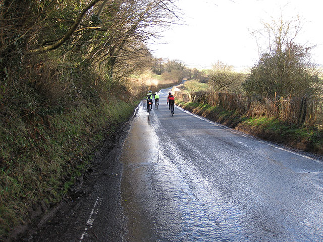
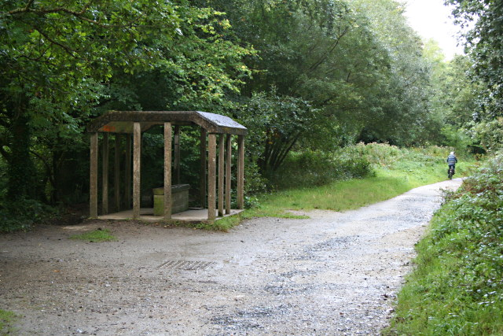

Scholarly Monograph Index
Technical Treatises on Cycling Outerwear
In-depth research monographs authored by our resident textile engineers and aerodynamicists on membrane physics, biomechanical articulation, and waterproofing maintenance.

Monograph 01
Hydrostatic Head & Nanoporous Breathability Membranes
An exhaustive investigation into ePTFE microstructure, moisture vapor transmission rates (MVTR), and dynamic fluid pressures in high-velocity rain descents.
1,420 words • Peer Reviewed • 181 Mercer St
Read Full Treatise →
Monograph 02
Kinetic Articulation & Aerodynamic Drag Reduction
Computational fluid dynamics and wind-tunnel analysis demonstrating how pre-rotated sleeve patterning eliminates fabric billowing and saves wattage.
1,380 words • Empirical Study • 181 Mercer St
Read Full Treatise →

Monograph 03
Ultrasonic Seam-Welding & DWR Longevity Maintenance
Bench protocols for molecular boundary bonding, microscopic tape application, and restorative polymer heating regimens for long-term water repellency.
1,395 words • Laboratory Guide • 181 Mercer St
Read Full Treatise →